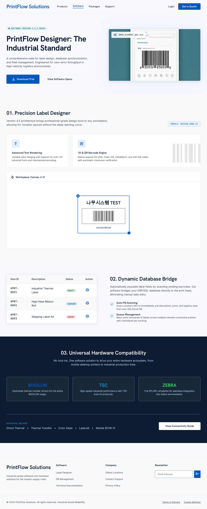
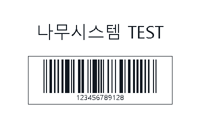

라벨출력 프로그램과 설정 화면을 같은 기준으로 정리했습니다.
홈에서 보여준 패키지 판매 흐름과 이어지도록 프로그램 상세, 설정 항목, 설치 전 확인 조건을 한 화면에서 볼 수 있게 구성했습니다.
Program preview
라벨출력 프로그램 화면

01
라벨 양식 확인
상품명, 코드, 수량, 바코드 위치처럼 출력에 들어갈 항목을 샘플 기준으로 정리합니다.
02
출력 목록 관리
자료 형식과 출력 수량을 확인하고, 반복 작업에 맞는 목록 구성 방식을 상담합니다.
03
설정 범위 안내
장비 모델, 라벨 규격, 스캐너 입력 방식, 설치 지원 범위는 견적 단계에서 확인합니다.
Settings
설정 화면은 확정 스펙이 아니라 확인 체크리스트로 보여줍니다.
공개 페이지에서 특정 모델이나 연결 조건을 단정하지 않고, 상담 때 확인해야 할 항목을 같은 디자인 톤으로 정리했습니다.
config.ini sample
설치 전 확인 항목
Label preview
출력물 미리보기까지 같은 흐름으로 연결합니다.
프로그램 화면, 설정 항목, 라벨 미리보기가 같은 페이지 톤으로 이어지도록 정리했습니다. 구매자는 장비만 보는 것이 아니라 실제 업무 흐름을 함께 이해할 수 있습니다.

출력 전 확인
라벨 항목과 위치 확인
자료 형식과 출력 목록 확인
장비 설정과 설치 조건 확인
Setup flow
설치 전후 확인 순서도 홈페이지와 맞췄습니다.
업무 자료 확인
상품 자료, 바코드 값, 출력 수량 항목을 먼저 확인합니다.
샘플 라벨 정리
출력할 항목과 위치를 미리보고 필요한 조정을 상담합니다.
설정 조건 확인
프린터, 스캐너, 라벨 규격, 설치 지원 조건을 견적서 기준으로 정리합니다.
사용 안내 제공
구성 확정 후 현장에서 반복 사용할 수 있는 안내 범위를 함께 안내합니다.
Next step